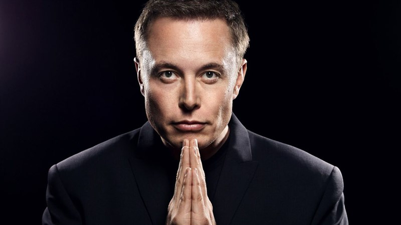

Elon Musk é um empresário e inventor sul-africano-americano nascido em 28 de junho de 1971. Ele é mais conhecido por fundar empresas como Tesla, SpaceX e Neuralink, além de co-fundar empresas como PayPal e Zip2. Musk é reconhecido por sua visão de longo prazo para a humanidade, incluindo objetivos ambiciosos como colonizar Marte e criar uma rede global de comunicação via satélite. Sua história inclui desafios, sucessos e controvérsias, mas ele é amplamente considerado um dos empresários mais influentes e visionários do século XXI.
